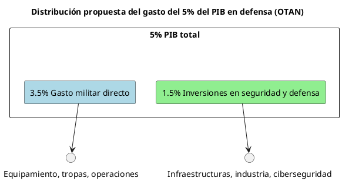
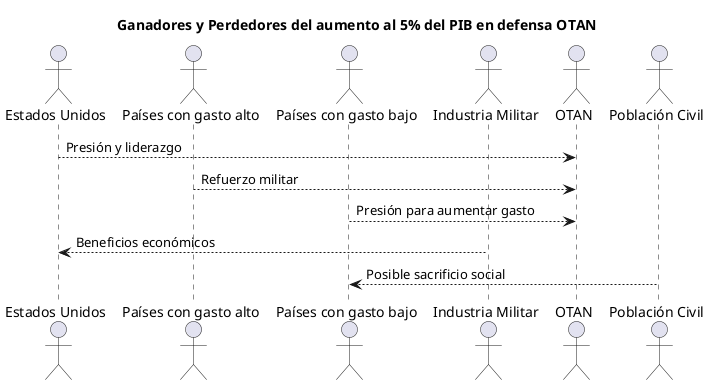

Análisis crítico sobre la subida del gasto en defensa del 2% al 5% del PIB en la OTAN
Análisis crítico sobre la subida del gasto en defensa del 2% al 5% del PIB en la OTAN
Introducción
El reciente impulso para elevar el gasto en defensa de los países miembros de la OTAN del tradicional 2% al 5% del PIB representa un cambio estratégico y político de gran calado. Esta propuesta, impulsada principalmente por Estados Unidos y formalizada por el secretario general de la OTAN, Mark Rutte, busca responder a un entorno global percibido como crecientemente peligroso, especialmente tras la guerra en Ucrania y la amenaza rusa. Este análisis crítico examina las causas, consecuencias, actores beneficiados y perjudicados, así como las tensiones internas que genera esta decisión.
Contexto y motivaciones
- La presión de Estados Unidos, especialmente bajo la administración Trump, ha sido decisiva para elevar la exigencia de gasto militar, pasando del 2% acordado en la cumbre de Gales (2014) a un 5% del PIB[1][2][7].
- Mark Rutte ha propuesto dividir el 5% en un 3,5% para gasto militar directo y un 1,5% para inversiones en seguridad y defensa más amplias, como infraestructuras y capacidades estratégicas[2][7].
- El objetivo es alcanzar esta meta hacia 2032, con planes anuales de incremento y supervisión estricta para evitar incumplimientos o aumentos ficticios[1][4][6].
- La justificación principal es la necesidad de reforzar la capacidad de disuasión ante amenazas crecientes, especialmente la rusa, y garantizar la defensa colectiva en un contexto internacional más volátil[1][3][6].
Ganadores y perdedores
| Categoría | Ganadores | Perdedores |
|---|---|---|
| Estados Unidos | Refuerza liderazgo y capacidad de presión | Riesgo de que aliados no cumplan plenamente |
| Países con gasto alto | Polonia, EE.UU. (ya cerca o por encima del 3%) | Países con gasto bajo: España, Italia, Alemania, Francia deben aumentar mucho[6][7] |
| Industria militar | Incremento significativo de contratos y ventas | Presupuestos sociales pueden verse recortados |
| OTAN | Mayor cohesión y capacidad militar | Riesgo de fracturas internas por resistencia |
| Población civil | Seguridad teóricamente reforzada | Posible sacrificio de gasto social y económico |
Análisis crítico
El aumento al 5% del PIB en gasto militar supone un esfuerzo económico sin precedentes desde la Guerra Fría para los países europeos. Por ejemplo, España debería incrementar su gasto en defensa en aproximadamente 65.300 millones de euros anuales para alcanzar esta meta, cifra que supera ampliamente presupuestos nacionales en educación y salud[6]. Este esfuerzo puede tensionar las economías y generar debates sobre prioridades sociales.
Además, la presión estadounidense ha sido calificada como poco negociable, lo que puede generar tensiones diplomáticas internas en la OTAN, especialmente en países con menor capacidad económica o con gobiernos reticentes a aumentar el gasto militar tan drásticamente[1][2][4]. España, por ejemplo, mantiene un compromiso actual con el 2% pero muestra cautela ante el salto al 5%, aunque no vetará el acuerdo[3][4].
La división propuesta por Rutte (3,5% gasto militar directo + 1,5% inversiones estratégicas) intenta hacer más digerible el objetivo, pero no elimina la magnitud del incremento ni los desafíos asociados. Además, la exigencia de planes anuales y supervisión estricta refleja la desconfianza en que los compromisos previos se cumplan sin presión constante[1][4].
Diagramas explicativos


Tabla comparativa de gasto actual vs objetivo 5%
| País | Gasto actual (% PIB) | Objetivo 5% (% PIB) | Incremento necesario (% PIB) | Comentarios |
|---|---|---|---|---|
| España | 1.28 | 5 | 3.72 | Gran esfuerzo económico |
| Polonia | 4.15 | 5 | 0.85 | Más cerca del objetivo |
| EE.UU. | 3.4 | 5 | 1.6 | Ya con gasto alto |
| Alemania | ~1.5-2 | 5 | 3-3.5 | Gran incremento necesario |
| Francia | ~2 | 5 | 3 | Similar a Alemania |
Conclusiones
El aumento del gasto en defensa al 5% del PIB en la OTAN es una respuesta estratégica a un entorno internacional más inseguro, impulsado por la presión estadounidense y la necesidad de reforzar la capacidad militar colectiva. Sin embargo, este objetivo plantea importantes retos económicos y políticos para los países miembros, especialmente en Europa, donde el esfuerzo requerido es considerable y puede generar tensiones internas.
La división del gasto en dos bloques busca facilitar la aceptación, pero la magnitud del incremento y la exigencia de cumplimiento estricto pueden provocar resistencias y debates sobre prioridades nacionales. España y otros países con menor gasto actual son los principales afectados, enfrentando la disyuntiva entre seguridad colectiva y equilibrio presupuestario.
En definitiva, la medida podría fortalecer la OTAN en términos militares, pero conlleva riesgos de fractura interna y presión social en los países miembros, que deberán gestionar cuidadosamente esta transición.
Referencias
- EE.UU. insiste en que los países de la OTAN dediquen el 5% en defensa: «Incluidos nuestros amigos de España» - El Debate, 2025[1]
- La OTAN y Estados Unidos meten presión a España - Infodefensa, 2025[2]
- Sánchez recibe al secretario general de la OTAN con el gasto en defensa en el foco - Infobae, 2025[3]
- El secretario general de la OTAN apunta a un 5 % el aumento del gasto militar - CM Media, 2025[4]
- Los miembros de la OTAN habrían comenzado a elaborar un acuerdo para destinar el 5% de su PIB a la defensa - Le Grand Continent, 2025[6]
- EE UU exigirá en la cumbre de la OTAN que los aliados ratifiquen el aumento del gasto en defensa al 5% del PIB - El País, 2025[7]